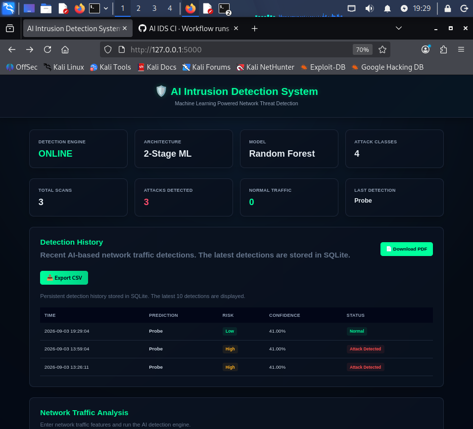
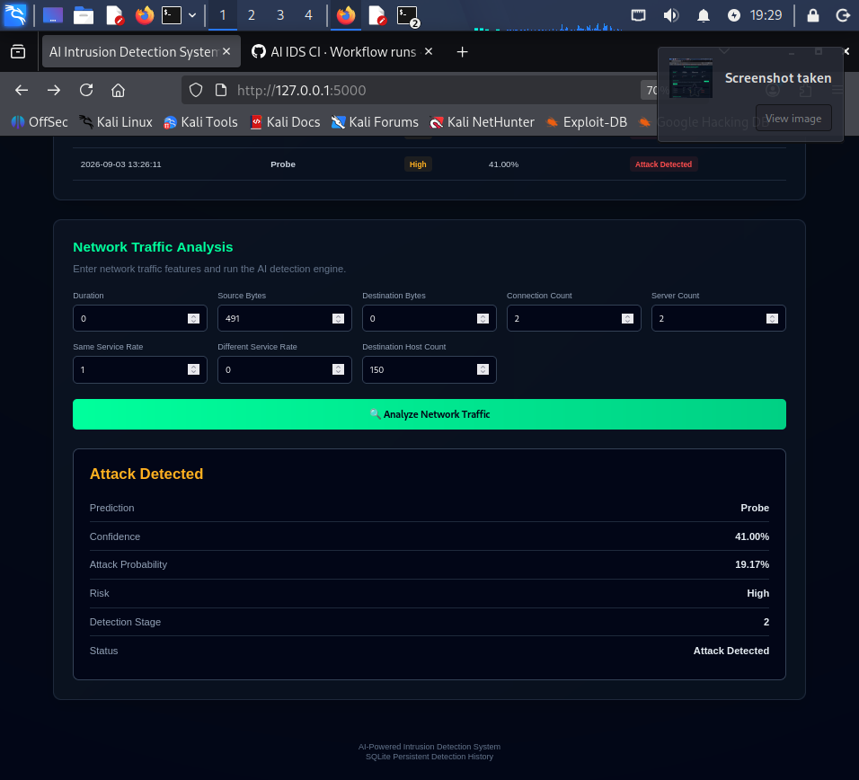
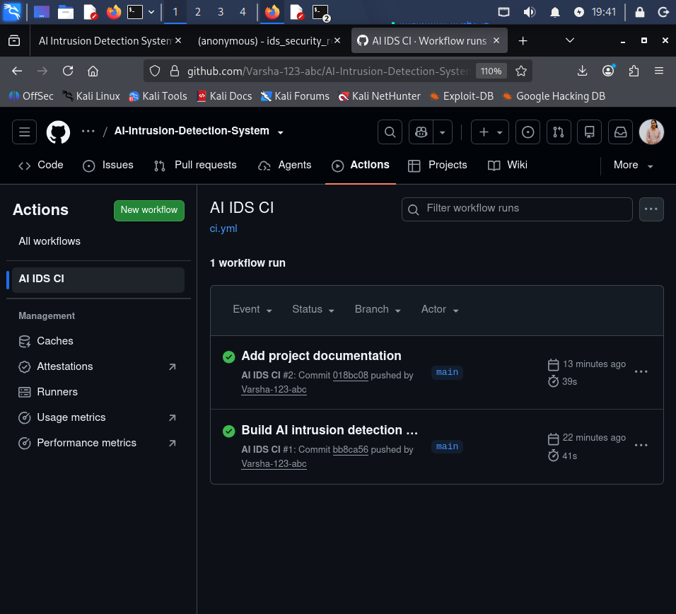

Featured Cybersecurity Project
AI-Powered Intrusion Detection System
Two-stage machine learning Intrusion Detection System built using Random Forest to identify malicious network traffic and classify DoS, Probe, R2L, and U2R attacks. Includes a SOC-style dashboard, persistent detection history, security reporting, Docker deployment, automated testing, and CI.



Technologies
Key Capabilities
- Two-stage attack detection
- DoS, Probe, R2L & U2R classification
- SOC-style monitoring dashboard
- Risk, confidence & attack probability scoring
- SQLite detection history
- CSV/PDF security reporting